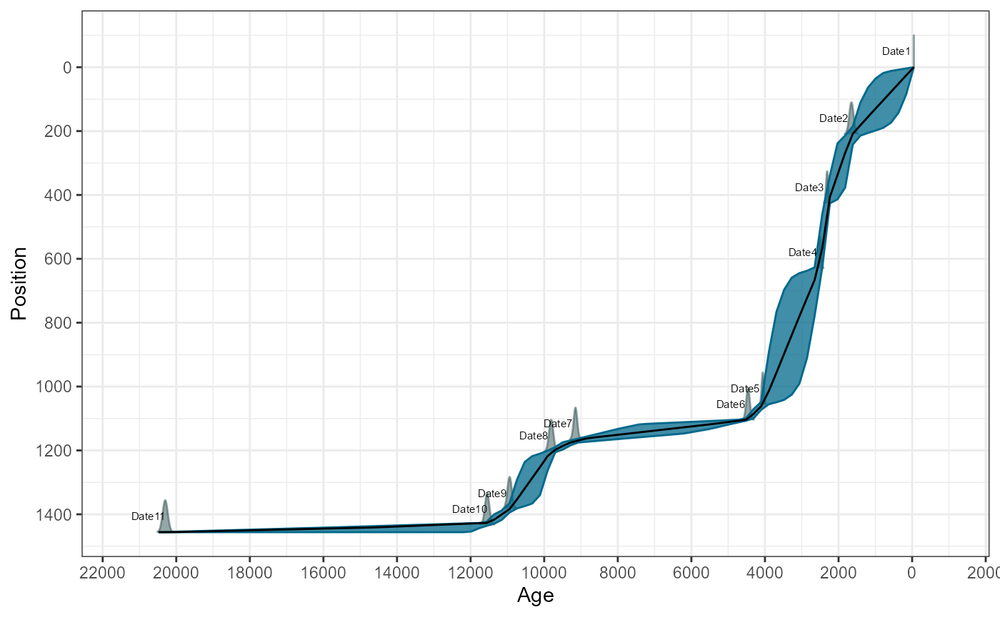
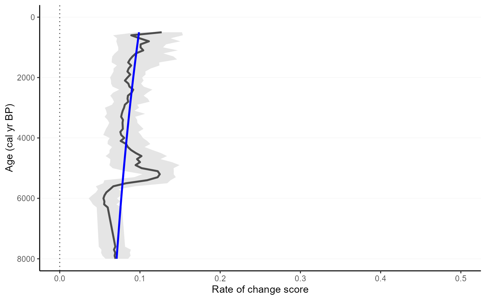

Example of full workflow
workflow-example.RmdThis workflow should show full strength of RRatepol package and serve as step by step guidance starting from downloading dataset from Neotoma, building age-depth models, to estimating rate-of-change using age uncertainty.
:warning: This workflow is only meant as example: There are several additional steps for data reparation which should be done to really use the data from Neotoma!
Download the dataset Glendalough Valley from Neotoma
gl_dataset_download <-
neotoma::get_download(17334)
chronology_id <-
gl_dataset_download[[1]]$sample.meta$chronology.id %>%
unique()
gl_chron_control_table_download <-
neotoma::get_chroncontrol(chronology_id)Prepare the pollen counts
gl_counts <-
gl_dataset_download[[1]]$counts
gl_taxon_list <-
gl_dataset_download[[1]]$taxon.list
gl_taxon_list_selected <-
gl_taxon_list %>%
dplyr::filter(variable.element == "pollen")
gl_counts_selected <-
gl_counts %>%
as.data.frame() %>%
tibble::rownames_to_column(., var = "sample_id") %>%
tibble::as_tibble() %>%
dplyr::select(sample_id, dplyr::any_of(gl_taxon_list_selected$taxon.name)) %>%
janitor::clean_names()
head(gl_counts_selected)[,1:5]| sample_id | alisma | alnus | amaranthaceae | anthemis_type |
|---|---|---|---|---|
| 161508 | 0 | 20 | 0 | 0 |
| 161509 | 1 | 12 | 1 | 0 |
| 161510 | 0 | 30 | 0 | 0 |
| 161511 | 0 | 34 | 0 | 0 |
| 161512 | 0 | 27 | 0 | 0 |
| 161513 | 0 | 24 | 1 | 0 |
Here, we strongly advocate that attention should be paid to the section of ecological ecological group, as well, as harmonisation of the pollen taxa. However, that is not subject of this workflow.
Preparation of the levels
Sample depth
Extract depth for each level
gl_level <-
gl_dataset_download[[1]]$sample.meta %>%
tibble::as_tibble() %>%
dplyr::rename(sample_id = sample.id) %>%
dplyr::select(sample_id, depth) %>%
dplyr::mutate_if(is.integer, as.character)
head(gl_level)| sample_id | depth |
|---|---|
| 161508 | 0 |
| 161509 | 8 |
| 161510 | 16 |
| 161511 | 24 |
| 161512 | 32 |
| 161513 | 40 |
Age depth modelling
We will recalculate new age-depth model ‘de novo’ using Bchron package. In this toy example we will use only iteration multiplier (i_multiplier) of 0.5 to reduce the computation time. However, we strongly recommend to increase it to 5 for any normal age-depth model construction.
Prepare chron.control table and run Bchron Here we only present few of the important steps of preparation of chron.control table. There are many more potential issues issues but solving those is not the focus of this workflow.
gl_chron_control_table <-
gl_chron_control_table_download$chron.control %>%
# here we calculate the error as the avarage as the age.old and age age.young
dplyr::mutate(
error = round((age.old - age.young) / 2)) %>%
# as Bchron cannot accept error of 0, we need to replace the value with 1
dplyr::mutate(
error = replace(error, error == 0, 1)) %>%
# we need to specifify which calibration curve should be used for what point
dplyr::mutate(
curve = ifelse(control.type == "Radiocarbon", "intcal20", "normal")) %>%
dplyr::select(chron.control.id, age, error, depth, thickness, control.type, curve)
gl_chron_control_table| chron.control.id | age | error | depth | thickness | control.type | curve |
|---|---|---|---|---|---|---|
| 37155 | -45 | 1 | 0 | 0 | Core top | normal |
| 37156 | 1650 | 60 | 210 | 3 | Radiocarbon | intcal20 |
| 37157 | 2310 | 30 | 426 | 4 | Radiocarbon | intcal20 |
| 37158 | 2500 | 30 | 630 | 4 | Radiocarbon | intcal20 |
| 37159 | 4060 | 30 | 1056 | 3 | Radiocarbon | intcal20 |
| 37160 | 4460 | 50 | 1105 | 4 | Radiocarbon | intcal20 |
| 37161 | 9150 | 50 | 1166 | 4 | Radiocarbon | intcal20 |
| 37162 | 9810 | 60 | 1204 | 4 | Radiocarbon | intcal20 |
| 37163 | 10940 | 60 | 1383 | 4 | Radiocarbon | intcal20 |
| 37164 | 11550 | 60 | 1433 | 3 | Radiocarbon | intcal20 |
| 37165 | 20300 | 70 | 1456 | 4 | Radiocarbon | intcal20 |
i_multiplier <- 0.5 # increase to 5
n_iteration_default <- 10e3
n_burn_default <- 2e3
n_thin_default <- 8
n_iteration <- n_iteration_default * i_multiplier
n_burn <- n_burn_default * i_multiplier
n_thin <- n_thin_default * i_multiplier
gl_bchron <-
Bchron::Bchronology(
ages = gl_chron_control_table$age,
ageSds = gl_chron_control_table$error,
positions = gl_chron_control_table$depth,
calCurves = gl_chron_control_table$curve,
positionThicknesses = gl_chron_control_table$thickness,
iterations = n_iteration,
burn = n_burn,
thin = n_thin)
plot(gl_bchron)
Predict ages
age_position <-
Bchron:::predict.BchronologyRun(gl_bchron, newPositions = gl_level$depth)
age_uncertainties <-
age_position %>%
as.data.frame() %>%
dplyr::mutate_all(., as.integer) %>%
as.matrix()
colnames(age_uncertainties) <- gl_level$sample_id
gl_level_predicted <-
gl_level %>%
dplyr::mutate(
age = apply(
age_uncertainties, 2,
stats::quantile,
probs = 0.5)
)
head(gl_level_predicted)| sample_id | depth | age |
|---|---|---|
| 161508 | 0 | -45 |
| 161509 | 8 | 15 |
| 161510 | 16 | 75.5 |
| 161511 | 24 | 136 |
| 161512 | 32 | 196 |
| 161513 | 40 | 255 |
Estimation Rate-of-Change
Here we use the the prepared data to estimate the rate of vegetation change. We will use the method of the binning with the mowing window, Shepard’s 5-term filter as data smoothing Chi-squared coefficient as dissimilarity coefficient. This is again a toy example for a quick computation and we would recommend increasing the randomisations to 10.000 for any real estimation.
randomisations <- 100 # increase to 10e3
gl_roc <-
RRatepol::fc_estimate_RoC(
data_source_community = gl_counts_selected,
data_source_age = gl_level_predicted,
age_uncertainty = age_uncertainties,
smooth_method = "shep",
DC = "chisq",
Working_Units = "MW",
bin_size = 500,
Number_of_shifts = 5,
standardise = TRUE,
N_individuals = 150,
rand = randomisations,
use_parallel = FALSE # use_parallel = TRUE to use parallel calculation
) Detect peak-points and plot the results
We will detect significant peak-points using Non-linear method
gl_roc_peaks <-
RRatepol::fc_detect_peak_points(
data_source = gl_roc,
sel_method = "trend_non_linear")Plot the estimates with showing both the peak-points
RRatepol::fc_plot_RoC_sequence(
data_source = gl_roc_peaks,
Peaks = TRUE,
trend = "trend_non_linear")